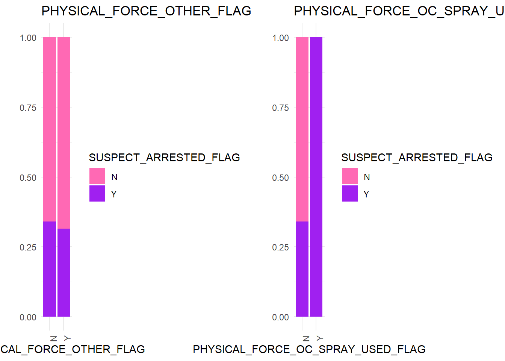
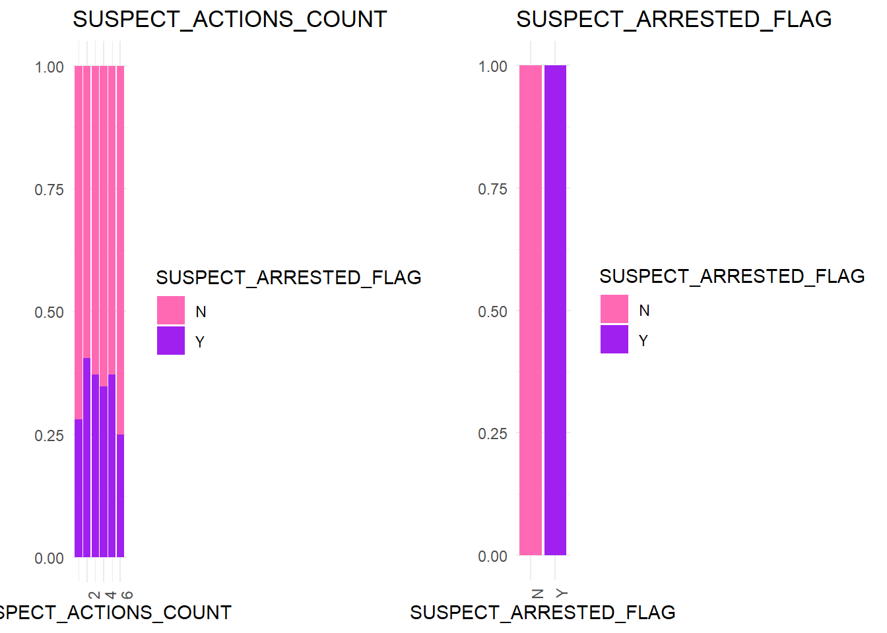
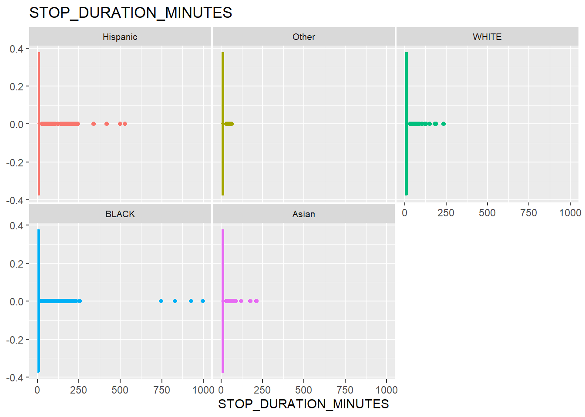

Rows: 75,031
Columns: 88
$ ASK_FOR_CONSENT_FLG <chr> NA, NA, NA, NA, NA, NA, NA, N…
$ BACKROUND_CIRCUMSTANCES_SUSPECT_KNOWN_TO_CARRY_WEAPON_FLAG <chr> "(null)", "(null)", "(null)",…
$ BACKROUND_CIRCUMSTANCES_VIOLENT_CRIME_FLAG <chr> "(null)", "(null)", "Y", "Y",…
$ CONSENT_GIVEN_FLG <chr> NA, NA, NA, NA, NA, NA, NA, N…
$ DAY2 <chr> "Monday", "Monday", "Monday",…
$ DEMEANOR_CODE <chr> "DE", "DE", "DE", "DE", "DE",…
$ DEMEANOR_OF_PERSON_STOPPED <chr> "COOPERATIVE", "NERVOUS", "RE…
$ FILE_YEAR <chr> "2018", "2018", "2018", "2018…
$ FIREARM_FLAG <chr> "(null)", "(null)", "(null)",…
$ FRISKED_FLAG <chr> "Y", "Y", "Y", "Y", "Y", "Y",…
$ ID_CARD_IDENTIFIES_OFFICER_FLAG <chr> "(null)", "(null)", "(null)",…
$ ISSUING_OFFICER_COMMAND_CODE <chr> "1", "34", "808", "63", "63",…
$ ISSUING_OFFICER_RANK <chr> "POM", "POM", "POM", "POM", "…
$ JURISDICTION_CODE <chr> "P", "P", "H", "P", "P", "P",…
$ JURISDICTION_DESCRIPTION <chr> "PSB", "PSB", "Housing", "PSB…
$ KNIFE_CUTTER_FLAG <chr> "(null)", "(null)", "(null)",…
$ LOCATION_IN_OUT_CODE <chr> "(null)", "O", "I", "O", "(nu…
$ MONTH2 <chr> "January", "January", "Januar…
$ OBSERVED_DURATION_MINUTES <chr> "0", "1", "0", "2", "2", "1",…
$ OFFICER_EXPLAINED_STOP_FLAG <chr> "Y", "Y", "Y", "Y", "Y", "Y",…
$ OFFICER_IN_UNIFORM_FLAG <chr> "Y", "Y", "Y", "Y", "Y", "Y",…
$ OFFICER_NOT_EXPLAINED_STOP_DESCRIPTION <chr> "(null)", "(null)", "(null)",…
$ OTHER_CONTRABAND_FLAG <chr> "N", "N", "N", "N", "N", "Y",…
$ OTHER_PERSON_STOPPED_FLAG <chr> "Y", "N", "N", "Y", "Y", "N",…
$ OTHER_WEAPON_FLAG <chr> "(null)", "(null)", "(null)",…
$ PHYSICAL_FORCE_CEW_FLAG <chr> "(null)", "(null)", "(null)",…
$ PHYSICAL_FORCE_DRAW_POINT_FIREARM_FLAG <chr> "(null)", "Y", "(null)", "(nu…
$ PHYSICAL_FORCE_HANDCUFF_SUSPECT_FLAG <chr> "(null)", "(null)", "(null)",…
$ PHYSICAL_FORCE_OC_SPRAY_USED_FLAG <chr> "(null)", "(null)", "(null)",…
$ PHYSICAL_FORCE_OTHER_FLAG <chr> "(null)", "(null)", "(null)",…
$ PHYSICAL_FORCE_RESTRAINT_USED_FLAG <chr> "(null)", "(null)", "(null)",…
$ PHYSICAL_FORCE_VERBAL_INSTRUCTION_FLAG <chr> "Y", "(null)", "Y", "Y", "Y",…
$ PHYSICAL_FORCE_WEAPON_IMPACT_FLAG <chr> "(null)", "(null)", "(null)",…
$ RECORD_STATUS_CODE <chr> "APP", "APP", "APP", "APP", "…
$ SEARCH_BASIS_ADMISSION_FLAG <chr> "(null)", "(null)", "(null)",…
$ SEARCH_BASIS_CONSENT_FLAG <chr> "(null)", "(null)", "(null)",…
$ SEARCH_BASIS_HARD_OBJECT_FLAG <chr> "(null)", "(null)", "(null)",…
$ SEARCH_BASIS_INCIDENTAL_TO_ARREST_FLAG <chr> "(null)", "(null)", "(null)",…
$ SEARCH_BASIS_OTHER_FLAG <chr> "(null)", "Y", "(null)", "Y",…
$ SEARCH_BASIS_OUTLINE_FLAG <chr> "(null)", "(null)", "(null)",…
$ SEARCHED_FLAG <chr> "N", "Y", "N", "Y", "Y", "N",…
$ SHIELD_IDENTIFIES_OFFICER_FLAG <chr> "(null)", "(null)", "(null)",…
$ STOP_DURATION_MINUTES <chr> "18", "15", "10", "15", "15",…
$ STOP_FRISK_DATE <chr> "2018-01-01", "2018-01-01", "…
$ STOP_FRISK_ID <chr> "1", "2", "3", "4", "5", "6",…
$ STOP_FRISK_TIME <chr> "1899-12-31 19:04:00", "1899-…
$ STOP_ID <chr> NA, NA, NA, NA, NA, NA, NA, N…
$ STOP_ID_ANONY <chr> NA, NA, NA, NA, NA, NA, NA, N…
$ STOP_LOCATION_APARTMENT <chr> "(null)", "(null)", "4M", "(n…
$ STOP_LOCATION_BORO_NAME <chr> "MANHATTAN", "MANHATTAN", "BR…
$ STOP_LOCATION_FULL_ADDRESS <chr> "VARICK STREET && FRANKLIN ST…
$ STOP_LOCATION_PATROL_BORO_NAME <chr> "PBMS", "PBMN", "PBBX", "PBBS…
$ STOP_LOCATION_PRECINCT <chr> "1", "34", "43", "63", "63", …
$ STOP_LOCATION_PREMISES_NAME <chr> "(null)", "(null)", "(null)",…
$ STOP_LOCATION_SECTOR_CODE <chr> "G", "C", "B", "B", "B", "C",…
$ STOP_LOCATION_STREET_NAME <chr> "VARICK STREET", "DYCKMAN STR…
$ STOP_LOCATION_X <chr> "982327", "1004892", "1026706…
$ STOP_LOCATION_Y <chr> "201274", "253548", "237776",…
$ STOP_LOCATION_ZIP_CODE <chr> "(null)", "(null)", "(null)",…
$ STOP_WAS_INITIATED <chr> "Based on C/W on Scene", "Bas…
$ SUMMONS_ISSUED_FLAG <chr> "N", "N", "N", "N", "N", "N",…
$ SUMMONS_OFFENSE_DESCRIPTION <chr> "(null)", "(null)", "(null)",…
$ SUPERVISING_ACTION_CORRESPONDING_ACTIVITY_LOG_ENTRY_REVIEWED <chr> "Y", "N", "Y", "Y", "Y", "Y",…
$ SUPERVISING_OFFICER_COMMAND_CODE <chr> "1", "34", "808", "63", "63",…
$ SUPERVISING_OFFICER_RANK <chr> "SGT", "SGT", "SGT", "SGT", "…
$ SUSPECT_ARREST_OFFENSE <chr> "(null)", "(null)", "(null)",…
$ SUSPECT_ARRESTED_FLAG <chr> "N", "N", "N", "Y", "Y", "N",…
$ SUSPECT_BODY_BUILD_TYPE <chr> "MED", "HEA", "THN", "MED", "…
$ SUSPECT_EYE_COLOR <chr> "BRO", "BRO", "BRO", "BRO", "…
$ SUSPECT_HAIR_COLOR <chr> "BLK", "BLK", "BLD", "BLK", "…
$ SUSPECT_HEIGHT <chr> "5.0999999999999996", "6.1", …
$ SUSPECT_OTHER_DESCRIPTION <chr> "(null)", "(null)", "(null)",…
$ SUSPECT_RACE_DESCRIPTION <chr> "WHITE", "BLACK HISPANIC", "W…
$ SUSPECT_REPORTED_AGE <chr> "(null)", "26", "40", "38", "…
$ SUSPECT_SEX <chr> "MALE", "MALE", "MALE", "MALE…
$ SUSPECT_WEIGHT <chr> "170", "250", "150", "160", "…
$ SUSPECTED_CRIME_DESCRIPTION <chr> "MENACING", "CPW", "GRAND LAR…
$ SUSPECTS_ACTIONS_CASING_FLAG <chr> "(null)", "(null)", "(null)",…
$ SUSPECTS_ACTIONS_CONCEALED_POSSESSION_WEAPON_FLAG <chr> "Y", "(null)", "(null)", "(nu…
$ SUSPECTS_ACTIONS_DECRIPTION_FLAG <chr> "Y", "Y", "Y", "Y", "Y", "Y",…
$ SUSPECTS_ACTIONS_DRUG_TRANSACTIONS_FLAG <chr> "(null)", "(null)", "(null)",…
$ SUSPECTS_ACTIONS_IDENTIFY_CRIME_PATTERN_FLAG <chr> "(null)", "(null)", "(null)",…
$ SUSPECTS_ACTIONS_LOOKOUT_FLAG <chr> "(null)", "(null)", "(null)",…
$ SUSPECTS_ACTIONS_OTHER_FLAG <chr> "(null)", "(null)", "(null)",…
$ SUSPECTS_ACTIONS_PROXIMITY_TO_SCENE_FLAG <chr> "Y", "(null)", "Y", "(null)",…
$ VERBAL_IDENTIFIES_OFFICER_FLAG <chr> "(null)", "(null)", "(null)",…
$ WEAPON_FOUND_FLAG <chr> "N", "N", "N", "N", "N", "N",…
$ YEAR2 <chr> "2018", "2018", "2018", "2018…Project
Read xlsx Files from 2018 to 2023
Strange Null Values to NA
Numeric Columns
Stop Frisk Time
# A tibble: 1,438 × 1
STOP_FRISK_TIME
<chr>
1 1899-12-31 19:04:00
2 1899-12-31 23:00:00
3 1899-12-31 23:55:00
4 1899-12-31 03:23:00
5 1899-12-31 21:20:00
6 1899-12-31
7 1899-12-31 00:20:00
8 1899-12-31 01:35:00
9 1899-12-31 09:25:00
10 1899-12-31 08:38:00
# ℹ 1,428 more rowsMissingness
# A tibble: 88 × 2
Column NA_Count
<chr> <int>
1 STOP_LOCATION_PREMISES_NAME 75031
2 PHYSICAL_FORCE_OC_SPRAY_USED_FLAG 75019
3 PHYSICAL_FORCE_WEAPON_IMPACT_FLAG 75005
4 ID_CARD_IDENTIFIES_OFFICER_FLAG 74767
5 PHYSICAL_FORCE_CEW_FLAG 74693
6 SUSPECTS_ACTIONS_IDENTIFY_CRIME_PATTERN_FLAG 74363
7 SUSPECTS_ACTIONS_DRUG_TRANSACTIONS_FLAG 74307
8 SUSPECTS_ACTIONS_LOOKOUT_FLAG 73933
9 OTHER_WEAPON_FLAG 73812
10 SEARCH_BASIS_ADMISSION_FLAG 73639
11 PHYSICAL_FORCE_RESTRAINT_USED_FLAG 73386
12 PHYSICAL_FORCE_OTHER_FLAG 73114
13 SUMMONS_OFFENSE_DESCRIPTION 73013
14 SEARCH_BASIS_OUTLINE_FLAG 73005
15 BACKROUND_CIRCUMSTANCES_SUSPECT_KNOWN_TO_CARRY_WEAPON_FLAG 72369
16 SUSPECTS_ACTIONS_CASING_FLAG 72229
17 STOP_LOCATION_APARTMENT 71927
18 PHYSICAL_FORCE_DRAW_POINT_FIREARM_FLAG 71710
19 OFFICER_NOT_EXPLAINED_STOP_DESCRIPTION 71342
20 SEARCH_BASIS_OTHER_FLAG 71327
21 FIREARM_FLAG 70666
22 SEARCH_BASIS_CONSENT_FLAG 70448
23 KNIFE_CUTTER_FLAG 70274
24 SEARCH_BASIS_HARD_OBJECT_FLAG 68526
25 VERBAL_IDENTIFIES_OFFICER_FLAG 67968
26 SHIELD_IDENTIFIES_OFFICER_FLAG 66938
27 STOP_LOCATION_ZIP_CODE 66104
28 STOP_FRISK_ID 64023
29 STOP_ID_ANONY 61572
30 PHYSICAL_FORCE_HANDCUFF_SUSPECT_FLAG 61557
31 SUSPECTS_ACTIONS_OTHER_FLAG 57706
32 SEARCH_BASIS_INCIDENTAL_TO_ARREST_FLAG 57361
33 BACKROUND_CIRCUMSTANCES_VIOLENT_CRIME_FLAG 55115
34 SUSPECTS_ACTIONS_CONCEALED_POSSESSION_WEAPON_FLAG 55093
35 SUSPECT_ARREST_OFFENSE 50783
36 SUSPECT_OTHER_DESCRIPTION 43978
37 SUSPECTS_ACTIONS_PROXIMITY_TO_SCENE_FLAG 37968
38 SUSPECTS_ACTIONS_DECRIPTION_FLAG 33687
39 DEMEANOR_CODE 33220
40 JURISDICTION_CODE 29720
41 JURISDICTION_DESCRIPTION 29720
42 STOP_FRISK_TIME 26273
43 SUPERVISING_ACTION_CORRESPONDING_ACTIVITY_LOG_ENTRY_REVIEWED 24856
44 STOP_ID 24467
45 LOCATION_IN_OUT_CODE 24243
46 CONSENT_GIVEN_FLG 15231
47 ASK_FOR_CONSENT_FLG 12471
48 SUSPECT_REPORTED_AGE 7666
49 DEMEANOR_OF_PERSON_STOPPED 7092
50 SUSPECT_WEIGHT 4777
51 PHYSICAL_FORCE_VERBAL_INSTRUCTION_FLAG 4414
52 SUSPECT_HEIGHT 4066
53 SUSPECT_EYE_COLOR 3148
54 SUSPECT_BODY_BUILD_TYPE 2374
55 SUSPECT_HAIR_COLOR 2152
56 SUPERVISING_OFFICER_RANK 1853
57 SUPERVISING_OFFICER_COMMAND_CODE 1853
58 SUSPECT_RACE_DESCRIPTION 973
59 SUSPECT_SEX 619
60 STOP_LOCATION_SECTOR_CODE 198
61 STOP_LOCATION_STREET_NAME 30
62 STOP_LOCATION_X 4
63 STOP_LOCATION_Y 4
64 ISSUING_OFFICER_RANK 2
65 STOP_FRISK_DATE 0
66 YEAR2 0
67 MONTH2 0
68 DAY2 0
69 STOP_WAS_INITIATED 0
70 RECORD_STATUS_CODE 0
71 ISSUING_OFFICER_COMMAND_CODE 0
72 OBSERVED_DURATION_MINUTES 0
73 SUSPECTED_CRIME_DESCRIPTION 0
74 STOP_DURATION_MINUTES 0
75 OFFICER_EXPLAINED_STOP_FLAG 0
76 OTHER_PERSON_STOPPED_FLAG 0
77 SUSPECT_ARRESTED_FLAG 0
78 SUMMONS_ISSUED_FLAG 0
79 OFFICER_IN_UNIFORM_FLAG 0
80 FRISKED_FLAG 0
81 SEARCHED_FLAG 0
82 OTHER_CONTRABAND_FLAG 0
83 WEAPON_FOUND_FLAG 0
84 STOP_LOCATION_PRECINCT 0
85 STOP_LOCATION_FULL_ADDRESS 0
86 STOP_LOCATION_PATROL_BORO_NAME 0
87 STOP_LOCATION_BORO_NAME 0
88 FILE_YEAR 0Flag Variables
# A tibble: 41 × 2
Column Unique_Values
<chr> <chr>
1 OFFICER_EXPLAINED_STOP_FLAG Y, N
2 OTHER_PERSON_STOPPED_FLAG Y, N
3 SUSPECT_ARRESTED_FLAG N, Y
4 SUMMONS_ISSUED_FLAG N, Y
5 OFFICER_IN_UNIFORM_FLAG Y, N
6 ID_CARD_IDENTIFIES_OFFICER_FLAG NA, I
7 SHIELD_IDENTIFIES_OFFICER_FLAG NA, S
8 VERBAL_IDENTIFIES_OFFICER_FLAG NA, V
9 FRISKED_FLAG Y, N
10 SEARCHED_FLAG N, Y
11 OTHER_CONTRABAND_FLAG N, Y
12 FIREARM_FLAG NA, Y
13 KNIFE_CUTTER_FLAG NA, Y
14 OTHER_WEAPON_FLAG NA, Y
15 WEAPON_FOUND_FLAG N, Y
16 PHYSICAL_FORCE_CEW_FLAG NA, Y
17 PHYSICAL_FORCE_DRAW_POINT_FIREARM_FLAG NA, Y
18 PHYSICAL_FORCE_HANDCUFF_SUSPECT_FLAG NA, Y
19 PHYSICAL_FORCE_OC_SPRAY_USED_FLAG NA, Y
20 PHYSICAL_FORCE_OTHER_FLAG NA, Y
21 PHYSICAL_FORCE_RESTRAINT_USED_FLAG NA, Y
22 PHYSICAL_FORCE_VERBAL_INSTRUCTION_FLAG Y, NA, (
23 PHYSICAL_FORCE_WEAPON_IMPACT_FLAG NA, Y
24 BACKROUND_CIRCUMSTANCES_VIOLENT_CRIME_FLAG NA, Y
25 BACKROUND_CIRCUMSTANCES_SUSPECT_KNOWN_TO_CARRY_WEAPON_FLAG NA, Y
26 SUSPECTS_ACTIONS_CASING_FLAG NA, Y
27 SUSPECTS_ACTIONS_CONCEALED_POSSESSION_WEAPON_FLAG Y, NA
28 SUSPECTS_ACTIONS_DECRIPTION_FLAG Y, NA
29 SUSPECTS_ACTIONS_DRUG_TRANSACTIONS_FLAG NA, Y
30 SUSPECTS_ACTIONS_IDENTIFY_CRIME_PATTERN_FLAG NA, Y
31 SUSPECTS_ACTIONS_LOOKOUT_FLAG NA, Y
32 SUSPECTS_ACTIONS_OTHER_FLAG NA, Y
33 SUSPECTS_ACTIONS_PROXIMITY_TO_SCENE_FLAG Y, NA, (
34 SEARCH_BASIS_ADMISSION_FLAG NA, Y
35 SEARCH_BASIS_CONSENT_FLAG NA, Y
36 SEARCH_BASIS_HARD_OBJECT_FLAG NA, Y
37 SEARCH_BASIS_INCIDENTAL_TO_ARREST_FLAG NA, Y
38 SEARCH_BASIS_OTHER_FLAG NA, Y
39 SEARCH_BASIS_OUTLINE_FLAG NA, Y
40 ASK_FOR_CONSENT_FLG NA, Y, N, (
41 CONSENT_GIVEN_FLG NA, Y, N, ( Impute NA to N in FLAG Columns
Only “Y” and NA present: Replace NA with “N”
“Y”, NA, and “(” present: Replace “(” with NA, and NA with “N”
“Y”, “N”, NA, and “(” present: Replace “(” with NA
# A tibble: 41 × 2
Column Unique_Values
<chr> <chr>
1 OFFICER_EXPLAINED_STOP_FLAG Y, N
2 OTHER_PERSON_STOPPED_FLAG Y, N
3 SUSPECT_ARRESTED_FLAG N, Y
4 SUMMONS_ISSUED_FLAG N, Y
5 OFFICER_IN_UNIFORM_FLAG Y, N
6 ID_CARD_IDENTIFIES_OFFICER_FLAG NA, I
7 SHIELD_IDENTIFIES_OFFICER_FLAG NA, S
8 VERBAL_IDENTIFIES_OFFICER_FLAG NA, V
9 FRISKED_FLAG Y, N
10 SEARCHED_FLAG N, Y
11 OTHER_CONTRABAND_FLAG N, Y
12 FIREARM_FLAG N, Y
13 KNIFE_CUTTER_FLAG N, Y
14 OTHER_WEAPON_FLAG N, Y
15 WEAPON_FOUND_FLAG N, Y
16 PHYSICAL_FORCE_CEW_FLAG N, Y
17 PHYSICAL_FORCE_DRAW_POINT_FIREARM_FLAG N, Y
18 PHYSICAL_FORCE_HANDCUFF_SUSPECT_FLAG N, Y
19 PHYSICAL_FORCE_OC_SPRAY_USED_FLAG N, Y
20 PHYSICAL_FORCE_OTHER_FLAG N, Y
21 PHYSICAL_FORCE_RESTRAINT_USED_FLAG N, Y
22 PHYSICAL_FORCE_VERBAL_INSTRUCTION_FLAG Y, N, NA
23 PHYSICAL_FORCE_WEAPON_IMPACT_FLAG N, Y
24 BACKROUND_CIRCUMSTANCES_VIOLENT_CRIME_FLAG N, Y
25 BACKROUND_CIRCUMSTANCES_SUSPECT_KNOWN_TO_CARRY_WEAPON_FLAG N, Y
26 SUSPECTS_ACTIONS_CASING_FLAG N, Y
27 SUSPECTS_ACTIONS_CONCEALED_POSSESSION_WEAPON_FLAG Y, N
28 SUSPECTS_ACTIONS_DECRIPTION_FLAG Y, N
29 SUSPECTS_ACTIONS_DRUG_TRANSACTIONS_FLAG N, Y
30 SUSPECTS_ACTIONS_IDENTIFY_CRIME_PATTERN_FLAG N, Y
31 SUSPECTS_ACTIONS_LOOKOUT_FLAG N, Y
32 SUSPECTS_ACTIONS_OTHER_FLAG N, Y
33 SUSPECTS_ACTIONS_PROXIMITY_TO_SCENE_FLAG Y, N, NA
34 SEARCH_BASIS_ADMISSION_FLAG N, Y
35 SEARCH_BASIS_CONSENT_FLAG N, Y
36 SEARCH_BASIS_HARD_OBJECT_FLAG N, Y
37 SEARCH_BASIS_INCIDENTAL_TO_ARREST_FLAG N, Y
38 SEARCH_BASIS_OTHER_FLAG N, Y
39 SEARCH_BASIS_OUTLINE_FLAG N, Y
40 ASK_FOR_CONSENT_FLG NA, Y, N
41 CONSENT_GIVEN_FLG NA, Y, N Missingness
# A tibble: 88 × 2
Column NA_Count
<chr> <int>
1 STOP_LOCATION_PREMISES_NAME 75031
2 ID_CARD_IDENTIFIES_OFFICER_FLAG 74767
3 SUMMONS_OFFENSE_DESCRIPTION 73013
4 STOP_LOCATION_APARTMENT 71927
5 OFFICER_NOT_EXPLAINED_STOP_DESCRIPTION 71342
6 VERBAL_IDENTIFIES_OFFICER_FLAG 67968
7 SHIELD_IDENTIFIES_OFFICER_FLAG 66938
8 STOP_LOCATION_ZIP_CODE 66104
9 STOP_FRISK_ID 64023
10 STOP_ID_ANONY 61572
11 SUSPECT_ARREST_OFFENSE 50783
12 SUSPECT_OTHER_DESCRIPTION 43978
13 DEMEANOR_CODE 33220
14 JURISDICTION_CODE 29720
15 JURISDICTION_DESCRIPTION 29720
16 STOP_FRISK_TIME 26273
17 SUPERVISING_ACTION_CORRESPONDING_ACTIVITY_LOG_ENTRY_REVIEWED 24856
18 STOP_ID 24467
19 LOCATION_IN_OUT_CODE 24243
20 CONSENT_GIVEN_FLG 18134
21 ASK_FOR_CONSENT_FLG 13178
22 SUSPECT_REPORTED_AGE 7666
23 DEMEANOR_OF_PERSON_STOPPED 7092
24 SUSPECT_WEIGHT 4777
25 SUSPECTS_ACTIONS_PROXIMITY_TO_SCENE_FLAG 4386
26 SUSPECT_HEIGHT 4066
27 SUSPECT_EYE_COLOR 3148
28 SUSPECT_BODY_BUILD_TYPE 2374
29 SUSPECT_HAIR_COLOR 2152
30 PHYSICAL_FORCE_VERBAL_INSTRUCTION_FLAG 2045
31 SUPERVISING_OFFICER_RANK 1853
32 SUPERVISING_OFFICER_COMMAND_CODE 1853
33 SUSPECT_RACE_DESCRIPTION 973
34 SUSPECT_SEX 619
35 STOP_LOCATION_SECTOR_CODE 198
36 STOP_LOCATION_STREET_NAME 30
37 STOP_LOCATION_X 4
38 STOP_LOCATION_Y 4
39 ISSUING_OFFICER_RANK 2
40 STOP_FRISK_DATE 0
41 YEAR2 0
42 MONTH2 0
43 DAY2 0
44 STOP_WAS_INITIATED 0
45 RECORD_STATUS_CODE 0
46 ISSUING_OFFICER_COMMAND_CODE 0
47 OBSERVED_DURATION_MINUTES 0
48 SUSPECTED_CRIME_DESCRIPTION 0
49 STOP_DURATION_MINUTES 0
50 OFFICER_EXPLAINED_STOP_FLAG 0
51 OTHER_PERSON_STOPPED_FLAG 0
52 SUSPECT_ARRESTED_FLAG 0
53 SUMMONS_ISSUED_FLAG 0
54 OFFICER_IN_UNIFORM_FLAG 0
55 FRISKED_FLAG 0
56 SEARCHED_FLAG 0
57 OTHER_CONTRABAND_FLAG 0
58 FIREARM_FLAG 0
59 KNIFE_CUTTER_FLAG 0
60 OTHER_WEAPON_FLAG 0
61 WEAPON_FOUND_FLAG 0
62 PHYSICAL_FORCE_CEW_FLAG 0
63 PHYSICAL_FORCE_DRAW_POINT_FIREARM_FLAG 0
64 PHYSICAL_FORCE_HANDCUFF_SUSPECT_FLAG 0
65 PHYSICAL_FORCE_OC_SPRAY_USED_FLAG 0
66 PHYSICAL_FORCE_OTHER_FLAG 0
67 PHYSICAL_FORCE_RESTRAINT_USED_FLAG 0
68 PHYSICAL_FORCE_WEAPON_IMPACT_FLAG 0
69 BACKROUND_CIRCUMSTANCES_VIOLENT_CRIME_FLAG 0
70 BACKROUND_CIRCUMSTANCES_SUSPECT_KNOWN_TO_CARRY_WEAPON_FLAG 0
71 SUSPECTS_ACTIONS_CASING_FLAG 0
72 SUSPECTS_ACTIONS_CONCEALED_POSSESSION_WEAPON_FLAG 0
73 SUSPECTS_ACTIONS_DECRIPTION_FLAG 0
74 SUSPECTS_ACTIONS_DRUG_TRANSACTIONS_FLAG 0
75 SUSPECTS_ACTIONS_IDENTIFY_CRIME_PATTERN_FLAG 0
76 SUSPECTS_ACTIONS_LOOKOUT_FLAG 0
77 SUSPECTS_ACTIONS_OTHER_FLAG 0
78 SEARCH_BASIS_ADMISSION_FLAG 0
79 SEARCH_BASIS_CONSENT_FLAG 0
80 SEARCH_BASIS_HARD_OBJECT_FLAG 0
81 SEARCH_BASIS_INCIDENTAL_TO_ARREST_FLAG 0
82 SEARCH_BASIS_OTHER_FLAG 0
83 SEARCH_BASIS_OUTLINE_FLAG 0
84 STOP_LOCATION_PRECINCT 0
85 STOP_LOCATION_FULL_ADDRESS 0
86 STOP_LOCATION_PATROL_BORO_NAME 0
87 STOP_LOCATION_BORO_NAME 0
88 FILE_YEAR 0# A tibble: 88 × 2
Column NA_Count
<chr> <int>
1 STOP_LOCATION_PREMISES_NAME 75031
2 ID_CARD_IDENTIFIES_OFFICER_FLAG 74767
3 SUMMONS_OFFENSE_DESCRIPTION 73013
4 STOP_LOCATION_APARTMENT 71927
5 OFFICER_NOT_EXPLAINED_STOP_DESCRIPTION 71342
6 VERBAL_IDENTIFIES_OFFICER_FLAG 67968
7 SHIELD_IDENTIFIES_OFFICER_FLAG 66938
8 STOP_LOCATION_ZIP_CODE 66104
9 STOP_FRISK_ID 64023
10 STOP_ID_ANONY 61572
# ℹ 78 more rowsWorking Dataset
Drop Columns with High Missingness
Rows: 52,297
Columns: 67
$ SUSPECT_REPORTED_AGE <dbl> 26, 40, 38, 36, 20, 46, 36, 29,…
$ DEMEANOR_OF_PERSON_STOPPED <chr> "NERVOUS", "RELIEVED", "COMPLAI…
$ SUSPECT_WEIGHT <dbl> 250, 150, 160, 230, 150, 215, 1…
$ SUSPECTS_ACTIONS_PROXIMITY_TO_SCENE_FLAG <chr> "N", "Y", "N", "N", "Y", "N", "…
$ SUSPECT_HEIGHT <dbl> 6.10, 5.50, 5.10, 5.11, 5.10, 5…
$ SUSPECT_EYE_COLOR <chr> "BRO", "BRO", "BRO", "BRO", "BR…
$ SUSPECT_BODY_BUILD_TYPE <chr> "HEA", "THN", "MED", "MED", "TH…
$ SUSPECT_HAIR_COLOR <chr> "BLK", "BLD", "BLK", "BLK", "BL…
$ PHYSICAL_FORCE_VERBAL_INSTRUCTION_FLAG <chr> "N", "Y", "Y", "Y", "Y", "Y", "…
$ SUPERVISING_OFFICER_RANK <chr> "SGT", "SGT", "SGT", "SGT", "SG…
$ SUPERVISING_OFFICER_COMMAND_CODE <chr> "34", "808", "63", "63", "71", …
$ SUSPECT_RACE_DESCRIPTION <chr> "BLACK HISPANIC", "WHITE HISPAN…
$ SUSPECT_SEX <chr> "MALE", "MALE", "MALE", "MALE",…
$ STOP_LOCATION_SECTOR_CODE <chr> "C", "B", "B", "B", "C", "B", "…
$ STOP_LOCATION_STREET_NAME <chr> "DYCKMAN STREET", "RANDALL AVEN…
$ STOP_LOCATION_X <dbl> 1004892, 1026706, 1001347, 1001…
$ STOP_LOCATION_Y <dbl> 253548, 237776, 166195, 166195,…
$ ISSUING_OFFICER_RANK <chr> "POM", "POM", "POM", "POM", "PO…
$ STOP_FRISK_DATE <date> 2018-01-01, 2018-01-01, 2018-0…
$ YEAR2 <chr> "2018", "2018", "2018", "2018",…
$ MONTH2 <chr> "January", "January", "January"…
$ DAY2 <chr> "Monday", "Monday", "Monday", "…
$ STOP_WAS_INITIATED <chr> "Based on Radio Run", "Based on…
$ RECORD_STATUS_CODE <chr> "APP", "APP", "APP", "APP", "AP…
$ ISSUING_OFFICER_COMMAND_CODE <chr> "34", "808", "63", "63", "71", …
$ OBSERVED_DURATION_MINUTES <dbl> 1, 0, 2, 2, 1, 1, 1, 1, 1, 1, 1…
$ SUSPECTED_CRIME_DESCRIPTION <chr> "CPW", "GRAND LARCENY", "ROBBER…
$ STOP_DURATION_MINUTES <dbl> 15, 10, 15, 15, 15, 10, 10, 10,…
$ OFFICER_EXPLAINED_STOP_FLAG <chr> "Y", "Y", "Y", "Y", "Y", "Y", "…
$ OTHER_PERSON_STOPPED_FLAG <chr> "N", "N", "Y", "Y", "N", "Y", "…
$ SUSPECT_ARRESTED_FLAG <chr> "N", "N", "Y", "Y", "N", "Y", "…
$ SUMMONS_ISSUED_FLAG <chr> "N", "N", "N", "N", "N", "N", "…
$ OFFICER_IN_UNIFORM_FLAG <chr> "Y", "Y", "Y", "Y", "Y", "Y", "…
$ FRISKED_FLAG <chr> "Y", "Y", "Y", "Y", "Y", "Y", "…
$ SEARCHED_FLAG <chr> "Y", "N", "Y", "Y", "N", "Y", "…
$ OTHER_CONTRABAND_FLAG <chr> "N", "N", "N", "N", "Y", "Y", "…
$ FIREARM_FLAG <chr> "N", "N", "N", "N", "N", "Y", "…
$ KNIFE_CUTTER_FLAG <chr> "N", "N", "N", "N", "N", "N", "…
$ OTHER_WEAPON_FLAG <chr> "N", "N", "N", "N", "N", "N", "…
$ WEAPON_FOUND_FLAG <chr> "N", "N", "N", "N", "N", "Y", "…
$ PHYSICAL_FORCE_CEW_FLAG <chr> "N", "N", "N", "N", "N", "N", "…
$ PHYSICAL_FORCE_DRAW_POINT_FIREARM_FLAG <chr> "Y", "N", "N", "N", "N", "N", "…
$ PHYSICAL_FORCE_HANDCUFF_SUSPECT_FLAG <chr> "N", "N", "N", "N", "N", "N", "…
$ PHYSICAL_FORCE_OC_SPRAY_USED_FLAG <chr> "N", "N", "N", "N", "N", "N", "…
$ PHYSICAL_FORCE_OTHER_FLAG <chr> "N", "N", "N", "N", "N", "N", "…
$ PHYSICAL_FORCE_RESTRAINT_USED_FLAG <chr> "N", "N", "Y", "Y", "N", "N", "…
$ PHYSICAL_FORCE_WEAPON_IMPACT_FLAG <chr> "N", "N", "N", "N", "N", "N", "…
$ BACKROUND_CIRCUMSTANCES_VIOLENT_CRIME_FLAG <chr> "N", "Y", "Y", "Y", "N", "N", "…
$ BACKROUND_CIRCUMSTANCES_SUSPECT_KNOWN_TO_CARRY_WEAPON_FLAG <chr> "N", "N", "N", "N", "N", "N", "…
$ SUSPECTS_ACTIONS_CASING_FLAG <chr> "N", "N", "N", "N", "N", "N", "…
$ SUSPECTS_ACTIONS_CONCEALED_POSSESSION_WEAPON_FLAG <chr> "N", "N", "N", "N", "N", "N", "…
$ SUSPECTS_ACTIONS_DECRIPTION_FLAG <chr> "Y", "Y", "Y", "Y", "Y", "N", "…
$ SUSPECTS_ACTIONS_DRUG_TRANSACTIONS_FLAG <chr> "N", "N", "N", "N", "N", "N", "…
$ SUSPECTS_ACTIONS_IDENTIFY_CRIME_PATTERN_FLAG <chr> "N", "N", "N", "N", "N", "N", "…
$ SUSPECTS_ACTIONS_LOOKOUT_FLAG <chr> "N", "N", "N", "N", "N", "N", "…
$ SUSPECTS_ACTIONS_OTHER_FLAG <chr> "N", "N", "Y", "Y", "N", "Y", "…
$ SEARCH_BASIS_ADMISSION_FLAG <chr> "N", "N", "N", "N", "N", "N", "…
$ SEARCH_BASIS_CONSENT_FLAG <chr> "N", "N", "N", "N", "N", "N", "…
$ SEARCH_BASIS_HARD_OBJECT_FLAG <chr> "N", "N", "N", "N", "N", "N", "…
$ SEARCH_BASIS_INCIDENTAL_TO_ARREST_FLAG <chr> "N", "N", "N", "N", "N", "Y", "…
$ SEARCH_BASIS_OTHER_FLAG <chr> "Y", "N", "Y", "Y", "N", "N", "…
$ SEARCH_BASIS_OUTLINE_FLAG <chr> "N", "N", "N", "N", "N", "N", "…
$ STOP_LOCATION_PRECINCT <chr> "34", "43", "63", "63", "67", "…
$ STOP_LOCATION_FULL_ADDRESS <chr> "DYCKMAN STREET && POST AVENUE"…
$ STOP_LOCATION_PATROL_BORO_NAME <chr> "PBMN", "PBBX", "PBBS", "PBBS",…
$ STOP_LOCATION_BORO_NAME <chr> "MANHATTAN", "BRONX", "BROOKLYN…
$ FILE_YEAR <chr> "2018", "2018", "2018", "2018",…Type Conversions for remaining predictors
tibble [52,297 × 58] (S3: tbl_df/tbl/data.frame)
$ SUSPECT_REPORTED_AGE : num [1:52297] 26 40 38 36 20 46 36 29 41 22 ...
$ SUSPECT_WEIGHT : num [1:52297] 250 150 160 230 150 215 170 185 190 220 ...
$ SUSPECTS_ACTIONS_PROXIMITY_TO_SCENE_FLAG : Factor w/ 2 levels "N","Y": 1 2 1 1 2 1 1 1 1 1 ...
$ SUSPECT_HEIGHT : num [1:52297] 6.1 5.5 5.1 5.11 5.1 5.7 5.8 6.1 6.1 6.1 ...
$ SUSPECT_EYE_COLOR : Factor w/ 11 levels "BLK","BLU","BRO",..: 3 3 3 3 3 3 3 3 3 3 ...
$ SUSPECT_BODY_BUILD_TYPE : Factor w/ 5 levels "HEA","MED","THN",..: 1 3 2 2 3 1 5 5 5 2 ...
$ SUSPECT_HAIR_COLOR : Factor w/ 15 levels "BLD","BLK","BLN",..: 2 1 2 2 2 2 2 2 2 2 ...
$ PHYSICAL_FORCE_VERBAL_INSTRUCTION_FLAG : Factor w/ 2 levels "N","Y": 1 2 2 2 2 2 2 2 2 2 ...
$ SUPERVISING_OFFICER_RANK : Factor w/ 14 levels "CPT","DI","DT3",..: 13 13 13 13 13 14 14 14 14 8 ...
$ SUPERVISING_OFFICER_COMMAND_CODE : Factor w/ 310 levels "X001","X005",..: 163 272 239 239 248 182 182 182 182 182 ...
$ SUSPECT_RACE_DESCRIPTION : Factor w/ 9 levels "AMERICAN.INDIAN.ALASKAN.N",..: 5 9 2 8 4 4 4 4 4 4 ...
$ SUSPECT_SEX : Factor w/ 2 levels "FEMALE","MALE": 2 2 2 2 2 2 2 2 2 2 ...
$ STOP_LOCATION_SECTOR_CODE : Factor w/ 15 levels "A","B","C","D",..: 3 2 2 2 3 2 2 2 2 4 ...
$ STOP_LOCATION_STREET_NAME : Factor w/ 5655 levels "ABERDEEN.STREET",..: 1183 3316 1601 1601 3415 1605 1605 1605 1605 146 ...
$ ISSUING_OFFICER_RANK : Factor w/ 16 levels "CPT","DI","DT1",..: 13 13 13 13 13 13 13 13 13 6 ...
$ STOP_WAS_INITIATED : Factor w/ 3 levels "Based.on.C.W.on.Scene",..: 2 2 2 2 3 3 3 3 3 3 ...
$ RECORD_STATUS_CODE : Factor w/ 1 level "APP": 1 1 1 1 1 1 1 1 1 1 ...
$ ISSUING_OFFICER_COMMAND_CODE : Factor w/ 327 levels "X001","X005",..: 171 288 255 255 266 192 192 192 192 192 ...
$ OBSERVED_DURATION_MINUTES : num [1:52297] 1 0 2 2 1 1 1 1 1 1 ...
$ SUSPECTED_CRIME_DESCRIPTION : Factor w/ 27 levels "ASSAULT","AUTO.STRIPPIG",..: 5 14 24 24 27 5 5 5 5 5 ...
$ STOP_DURATION_MINUTES : num [1:52297] 15 10 15 15 15 10 10 10 10 2 ...
$ OFFICER_EXPLAINED_STOP_FLAG : Factor w/ 2 levels "N","Y": 2 2 2 2 2 2 2 2 2 2 ...
$ OTHER_PERSON_STOPPED_FLAG : Factor w/ 2 levels "N","Y": 1 1 2 2 1 2 2 2 2 1 ...
$ SUSPECT_ARRESTED_FLAG : Factor w/ 2 levels "N","Y": 1 1 2 2 1 2 2 2 2 2 ...
$ SUMMONS_ISSUED_FLAG : Factor w/ 2 levels "N","Y": 1 1 1 1 1 1 1 1 1 1 ...
$ OFFICER_IN_UNIFORM_FLAG : Factor w/ 2 levels "N","Y": 2 2 2 2 2 2 2 2 2 2 ...
$ FRISKED_FLAG : Factor w/ 2 levels "N","Y": 2 2 2 2 2 2 2 2 2 2 ...
$ SEARCHED_FLAG : Factor w/ 2 levels "N","Y": 2 1 2 2 1 2 2 2 2 1 ...
$ OTHER_CONTRABAND_FLAG : Factor w/ 2 levels "N","Y": 1 1 1 1 2 2 1 1 1 2 ...
$ FIREARM_FLAG : Factor w/ 2 levels "N","Y": 1 1 1 1 1 2 2 2 2 2 ...
$ KNIFE_CUTTER_FLAG : Factor w/ 2 levels "N","Y": 1 1 1 1 1 1 1 1 1 1 ...
$ OTHER_WEAPON_FLAG : Factor w/ 2 levels "N","Y": 1 1 1 1 1 1 1 1 1 1 ...
$ WEAPON_FOUND_FLAG : Factor w/ 2 levels "N","Y": 1 1 1 1 1 2 2 2 2 2 ...
$ PHYSICAL_FORCE_CEW_FLAG : Factor w/ 2 levels "N","Y": 1 1 1 1 1 1 1 1 1 1 ...
$ PHYSICAL_FORCE_DRAW_POINT_FIREARM_FLAG : Factor w/ 2 levels "N","Y": 2 1 1 1 1 1 1 1 1 1 ...
$ PHYSICAL_FORCE_HANDCUFF_SUSPECT_FLAG : Factor w/ 2 levels "N","Y": 1 1 1 1 1 1 1 1 1 1 ...
$ PHYSICAL_FORCE_OC_SPRAY_USED_FLAG : Factor w/ 2 levels "N","Y": 1 1 1 1 1 1 1 1 1 1 ...
$ PHYSICAL_FORCE_OTHER_FLAG : Factor w/ 2 levels "N","Y": 1 1 1 1 1 1 1 1 1 1 ...
$ PHYSICAL_FORCE_RESTRAINT_USED_FLAG : Factor w/ 2 levels "N","Y": 1 1 2 2 1 1 1 1 1 1 ...
$ PHYSICAL_FORCE_WEAPON_IMPACT_FLAG : Factor w/ 2 levels "N","Y": 1 1 1 1 1 1 1 1 1 1 ...
$ BACKROUND_CIRCUMSTANCES_VIOLENT_CRIME_FLAG : Factor w/ 2 levels "N","Y": 1 2 2 2 1 1 1 1 1 1 ...
$ BACKROUND_CIRCUMSTANCES_SUSPECT_KNOWN_TO_CARRY_WEAPON_FLAG: Factor w/ 2 levels "N","Y": 1 1 1 1 1 1 1 1 1 1 ...
$ SUSPECTS_ACTIONS_CASING_FLAG : Factor w/ 2 levels "N","Y": 1 1 1 1 1 1 1 1 1 1 ...
$ SUSPECTS_ACTIONS_CONCEALED_POSSESSION_WEAPON_FLAG : Factor w/ 2 levels "N","Y": 1 1 1 1 1 1 2 2 2 1 ...
$ SUSPECTS_ACTIONS_DECRIPTION_FLAG : Factor w/ 2 levels "N","Y": 2 2 2 2 2 1 1 1 1 1 ...
$ SUSPECTS_ACTIONS_DRUG_TRANSACTIONS_FLAG : Factor w/ 2 levels "N","Y": 1 1 1 1 1 1 1 1 1 1 ...
$ SUSPECTS_ACTIONS_IDENTIFY_CRIME_PATTERN_FLAG : Factor w/ 2 levels "N","Y": 1 1 1 1 1 1 1 1 1 1 ...
$ SUSPECTS_ACTIONS_LOOKOUT_FLAG : Factor w/ 2 levels "N","Y": 1 1 1 1 1 1 1 1 1 1 ...
$ SUSPECTS_ACTIONS_OTHER_FLAG : Factor w/ 2 levels "N","Y": 1 1 2 2 1 2 2 1 1 2 ...
$ SEARCH_BASIS_ADMISSION_FLAG : Factor w/ 2 levels "N","Y": 1 1 1 1 1 1 1 1 1 1 ...
$ SEARCH_BASIS_CONSENT_FLAG : Factor w/ 2 levels "N","Y": 1 1 1 1 1 1 1 1 1 1 ...
$ SEARCH_BASIS_HARD_OBJECT_FLAG : Factor w/ 2 levels "N","Y": 1 1 1 1 1 1 1 1 1 1 ...
$ SEARCH_BASIS_INCIDENTAL_TO_ARREST_FLAG : Factor w/ 2 levels "N","Y": 1 1 1 1 1 2 2 2 2 1 ...
$ SEARCH_BASIS_OTHER_FLAG : Factor w/ 2 levels "N","Y": 2 1 2 2 1 1 1 1 1 1 ...
$ SEARCH_BASIS_OUTLINE_FLAG : Factor w/ 2 levels "N","Y": 1 1 1 1 1 1 1 1 1 1 ...
$ STOP_LOCATION_PRECINCT : Factor w/ 134 levels "X001","X005",..: 95 99 113 113 115 115 115 115 115 115 ...
$ STOP_LOCATION_PATROL_BORO_NAME : Factor w/ 8 levels "PBBN","PBBS",..: 4 3 2 2 2 2 2 2 2 2 ...
$ STOP_LOCATION_BORO_NAME : Factor w/ 5 levels "BRONX","BROOKLYN",..: 3 1 2 2 2 2 2 2 2 2 ...Check unique values in factor columns
$SUSPECT_EYE_COLOR
[1] BRO BLK GRY HAZ ZZZ BLU GRN MUL OTH PNK MAR
Levels: BLK BLU BRO GRN GRY HAZ MAR MUL OTH PNK ZZZ
$SUSPECT_HAIR_COLOR
[1] BLK BLD XXX BLN BRO GRY ZZZ ORG RED WHI PNK SDY GRN PLE X.nu
Levels: BLD BLK BLN BRO GRN GRY ORG PLE PNK RED SDY WHI X.nu XXX ZZZ
$SUSPECT_BODY_BUILD_TYPE
[1] HEA THN MED XXX U
Levels: HEA MED THN U XXX
$SUSPECTED_CRIME_DESCRIPTION
[1] CPW GRAND.LARCENY
[3] ROBBERY UNAUTHORIZED.USE.OF.A.VEHICLE
[5] OTHER ASSAULT
[7] BURGLARY PETIT.LARCENY
[9] CRIMINAL.POSSESSION.OF.MARIHUANA CRIMINAL.TRESPASS
[11] GRAND.LARCENY.AUTO THEFT.OF.SERVICES
[13] RECKLESS.ENDANGERMENT CRIMINAL.POSSESSION.OF.CONTROLLED.SUBSTANCE
[15] CPSP RAPE
[17] CRIMINAL.SALE.OF.CONTROLLED.SUBSTANCE FORCIBLE.TOUCHING
[19] CRIMINAL.MISCHIEF AUTO.STRIPPIG
[21] MENACING MAKING.GRAFFITI
[23] CRIMINAL.SALE.OF.MARIHUANA CRIMINAL.POSSESSION.OF.FORGED.INSTRUMENT
[25] TERRORISM MURDER
[27] PROSTITUTION
27 Levels: ASSAULT AUTO.STRIPPIG BURGLARY CPSP CPW ... UNAUTHORIZED.USE.OF.A.VEHICLE
$STOP_LOCATION_PATROL_BORO_NAME
[1] PBMN PBBX PBBS PBBN PBQS PBMS PBQN PBSI
Levels: PBBN PBBS PBBX PBMN PBMS PBQN PBQS PBSI
$STOP_LOCATION_BORO_NAME
[1] MANHATTAN BRONX BROOKLYN QUEENS STATEN.ISLAND
Levels: BRONX BROOKLYN MANHATTAN QUEENS STATEN.ISLANDClean SUSPECT_HAIR_COLOR with “(nu” to NA
Also drop any unused levels that are present
sum(working_dataset$SUSPECT_HAIR_COLOR == "(nu", na.rm = TRUE)[1] 0working_dataset$SUSPECT_HAIR_COLOR[working_dataset$SUSPECT_HAIR_COLOR == "(nu"] <- NA
# Remove rows with NA values in the SUSPECT_HAIR_COLOR column
working_dataset <- working_dataset[!is.na(working_dataset$SUSPECT_HAIR_COLOR), ]
working_dataset <- droplevels(working_dataset)
str(working_dataset)tibble [52,297 × 58] (S3: tbl_df/tbl/data.frame)
$ SUSPECT_REPORTED_AGE : num [1:52297] 26 40 38 36 20 46 36 29 41 22 ...
$ SUSPECT_WEIGHT : num [1:52297] 250 150 160 230 150 215 170 185 190 220 ...
$ SUSPECTS_ACTIONS_PROXIMITY_TO_SCENE_FLAG : Factor w/ 2 levels "N","Y": 1 2 1 1 2 1 1 1 1 1 ...
$ SUSPECT_HEIGHT : num [1:52297] 6.1 5.5 5.1 5.11 5.1 5.7 5.8 6.1 6.1 6.1 ...
$ SUSPECT_EYE_COLOR : Factor w/ 11 levels "BLK","BLU","BRO",..: 3 3 3 3 3 3 3 3 3 3 ...
$ SUSPECT_BODY_BUILD_TYPE : Factor w/ 5 levels "HEA","MED","THN",..: 1 3 2 2 3 1 5 5 5 2 ...
$ SUSPECT_HAIR_COLOR : Factor w/ 15 levels "BLD","BLK","BLN",..: 2 1 2 2 2 2 2 2 2 2 ...
$ PHYSICAL_FORCE_VERBAL_INSTRUCTION_FLAG : Factor w/ 2 levels "N","Y": 1 2 2 2 2 2 2 2 2 2 ...
$ SUPERVISING_OFFICER_RANK : Factor w/ 14 levels "CPT","DI","DT3",..: 13 13 13 13 13 14 14 14 14 8 ...
$ SUPERVISING_OFFICER_COMMAND_CODE : Factor w/ 310 levels "X001","X005",..: 163 272 239 239 248 182 182 182 182 182 ...
$ SUSPECT_RACE_DESCRIPTION : Factor w/ 9 levels "AMERICAN.INDIAN.ALASKAN.N",..: 5 9 2 8 4 4 4 4 4 4 ...
$ SUSPECT_SEX : Factor w/ 2 levels "FEMALE","MALE": 2 2 2 2 2 2 2 2 2 2 ...
$ STOP_LOCATION_SECTOR_CODE : Factor w/ 15 levels "A","B","C","D",..: 3 2 2 2 3 2 2 2 2 4 ...
$ STOP_LOCATION_STREET_NAME : Factor w/ 5655 levels "ABERDEEN.STREET",..: 1183 3316 1601 1601 3415 1605 1605 1605 1605 146 ...
$ ISSUING_OFFICER_RANK : Factor w/ 16 levels "CPT","DI","DT1",..: 13 13 13 13 13 13 13 13 13 6 ...
$ STOP_WAS_INITIATED : Factor w/ 3 levels "Based.on.C.W.on.Scene",..: 2 2 2 2 3 3 3 3 3 3 ...
$ RECORD_STATUS_CODE : Factor w/ 1 level "APP": 1 1 1 1 1 1 1 1 1 1 ...
$ ISSUING_OFFICER_COMMAND_CODE : Factor w/ 327 levels "X001","X005",..: 171 288 255 255 266 192 192 192 192 192 ...
$ OBSERVED_DURATION_MINUTES : num [1:52297] 1 0 2 2 1 1 1 1 1 1 ...
$ SUSPECTED_CRIME_DESCRIPTION : Factor w/ 27 levels "ASSAULT","AUTO.STRIPPIG",..: 5 14 24 24 27 5 5 5 5 5 ...
$ STOP_DURATION_MINUTES : num [1:52297] 15 10 15 15 15 10 10 10 10 2 ...
$ OFFICER_EXPLAINED_STOP_FLAG : Factor w/ 2 levels "N","Y": 2 2 2 2 2 2 2 2 2 2 ...
$ OTHER_PERSON_STOPPED_FLAG : Factor w/ 2 levels "N","Y": 1 1 2 2 1 2 2 2 2 1 ...
$ SUSPECT_ARRESTED_FLAG : Factor w/ 2 levels "N","Y": 1 1 2 2 1 2 2 2 2 2 ...
$ SUMMONS_ISSUED_FLAG : Factor w/ 2 levels "N","Y": 1 1 1 1 1 1 1 1 1 1 ...
$ OFFICER_IN_UNIFORM_FLAG : Factor w/ 2 levels "N","Y": 2 2 2 2 2 2 2 2 2 2 ...
$ FRISKED_FLAG : Factor w/ 2 levels "N","Y": 2 2 2 2 2 2 2 2 2 2 ...
$ SEARCHED_FLAG : Factor w/ 2 levels "N","Y": 2 1 2 2 1 2 2 2 2 1 ...
$ OTHER_CONTRABAND_FLAG : Factor w/ 2 levels "N","Y": 1 1 1 1 2 2 1 1 1 2 ...
$ FIREARM_FLAG : Factor w/ 2 levels "N","Y": 1 1 1 1 1 2 2 2 2 2 ...
$ KNIFE_CUTTER_FLAG : Factor w/ 2 levels "N","Y": 1 1 1 1 1 1 1 1 1 1 ...
$ OTHER_WEAPON_FLAG : Factor w/ 2 levels "N","Y": 1 1 1 1 1 1 1 1 1 1 ...
$ WEAPON_FOUND_FLAG : Factor w/ 2 levels "N","Y": 1 1 1 1 1 2 2 2 2 2 ...
$ PHYSICAL_FORCE_CEW_FLAG : Factor w/ 2 levels "N","Y": 1 1 1 1 1 1 1 1 1 1 ...
$ PHYSICAL_FORCE_DRAW_POINT_FIREARM_FLAG : Factor w/ 2 levels "N","Y": 2 1 1 1 1 1 1 1 1 1 ...
$ PHYSICAL_FORCE_HANDCUFF_SUSPECT_FLAG : Factor w/ 2 levels "N","Y": 1 1 1 1 1 1 1 1 1 1 ...
$ PHYSICAL_FORCE_OC_SPRAY_USED_FLAG : Factor w/ 2 levels "N","Y": 1 1 1 1 1 1 1 1 1 1 ...
$ PHYSICAL_FORCE_OTHER_FLAG : Factor w/ 2 levels "N","Y": 1 1 1 1 1 1 1 1 1 1 ...
$ PHYSICAL_FORCE_RESTRAINT_USED_FLAG : Factor w/ 2 levels "N","Y": 1 1 2 2 1 1 1 1 1 1 ...
$ PHYSICAL_FORCE_WEAPON_IMPACT_FLAG : Factor w/ 2 levels "N","Y": 1 1 1 1 1 1 1 1 1 1 ...
$ BACKROUND_CIRCUMSTANCES_VIOLENT_CRIME_FLAG : Factor w/ 2 levels "N","Y": 1 2 2 2 1 1 1 1 1 1 ...
$ BACKROUND_CIRCUMSTANCES_SUSPECT_KNOWN_TO_CARRY_WEAPON_FLAG: Factor w/ 2 levels "N","Y": 1 1 1 1 1 1 1 1 1 1 ...
$ SUSPECTS_ACTIONS_CASING_FLAG : Factor w/ 2 levels "N","Y": 1 1 1 1 1 1 1 1 1 1 ...
$ SUSPECTS_ACTIONS_CONCEALED_POSSESSION_WEAPON_FLAG : Factor w/ 2 levels "N","Y": 1 1 1 1 1 1 2 2 2 1 ...
$ SUSPECTS_ACTIONS_DECRIPTION_FLAG : Factor w/ 2 levels "N","Y": 2 2 2 2 2 1 1 1 1 1 ...
$ SUSPECTS_ACTIONS_DRUG_TRANSACTIONS_FLAG : Factor w/ 2 levels "N","Y": 1 1 1 1 1 1 1 1 1 1 ...
$ SUSPECTS_ACTIONS_IDENTIFY_CRIME_PATTERN_FLAG : Factor w/ 2 levels "N","Y": 1 1 1 1 1 1 1 1 1 1 ...
$ SUSPECTS_ACTIONS_LOOKOUT_FLAG : Factor w/ 2 levels "N","Y": 1 1 1 1 1 1 1 1 1 1 ...
$ SUSPECTS_ACTIONS_OTHER_FLAG : Factor w/ 2 levels "N","Y": 1 1 2 2 1 2 2 1 1 2 ...
$ SEARCH_BASIS_ADMISSION_FLAG : Factor w/ 2 levels "N","Y": 1 1 1 1 1 1 1 1 1 1 ...
$ SEARCH_BASIS_CONSENT_FLAG : Factor w/ 2 levels "N","Y": 1 1 1 1 1 1 1 1 1 1 ...
$ SEARCH_BASIS_HARD_OBJECT_FLAG : Factor w/ 2 levels "N","Y": 1 1 1 1 1 1 1 1 1 1 ...
$ SEARCH_BASIS_INCIDENTAL_TO_ARREST_FLAG : Factor w/ 2 levels "N","Y": 1 1 1 1 1 2 2 2 2 1 ...
$ SEARCH_BASIS_OTHER_FLAG : Factor w/ 2 levels "N","Y": 2 1 2 2 1 1 1 1 1 1 ...
$ SEARCH_BASIS_OUTLINE_FLAG : Factor w/ 2 levels "N","Y": 1 1 1 1 1 1 1 1 1 1 ...
$ STOP_LOCATION_PRECINCT : Factor w/ 134 levels "X001","X005",..: 95 99 113 113 115 115 115 115 115 115 ...
$ STOP_LOCATION_PATROL_BORO_NAME : Factor w/ 8 levels "PBBN","PBBS",..: 4 3 2 2 2 2 2 2 2 2 ...
$ STOP_LOCATION_BORO_NAME : Factor w/ 5 levels "BRONX","BROOKLYN",..: 3 1 2 2 2 2 2 2 2 2 ...Look at level counts
factor_levels <- sapply(data, function(x) if (is.factor(x)) nlevels(x) else NA)
# Display results
factor_info <- data.frame(
Predictor = names(factor_levels),
Levels = factor_levels
)
# Show predictors that are factors with their number of levels
factor_info <- factor_info[!is.na(factor_info$Levels), ]
print(factor_info)[1] Predictor Levels
<0 rows> (or 0-length row.names)Drop RECORD_STATUS_CODE
working_dataset <- working_dataset %>%
select(-RECORD_STATUS_CODE)Response Variable
table(working_dataset$SUSPECT_RACE_DESCRIPTION)
AMERICAN.INDIAN.ALASKAN.N AMERICAN.INDIAN.ALASKAN.NATIVE ASIAN...PACIFIC.ISLANDER
10 53 1117
BLACK BLACK.HISPANIC MIDDLE.EASTERN.SOUTHWEST
30757 4716 65
MIDDLE.EASTERN.SOUTHWEST.ASIAN WHITE WHITE.HISPANIC
269 4346 10964 working_dataset <- working_dataset %>%
# Convert to character to avoid factor level issues
mutate(SUSPECT_RACE_DESCRIPTION = as.character(SUSPECT_RACE_DESCRIPTION)) %>%
# Consolidate levels using case_when
mutate(SUSPECT_RACE_DESCRIPTION = case_when(
SUSPECT_RACE_DESCRIPTION %in% c("AMERICAN.INDIAN.ALASKAN.N", "AMERICAN.INDIAN.ALASKAN.NATIVE") ~ "Other",
SUSPECT_RACE_DESCRIPTION %in% c("MIDDLE.EASTERN.SOUTHWEST", "MIDDLE.EASTERN.SOUTHWEST.ASIAN") ~ "Other",
SUSPECT_RACE_DESCRIPTION == "ASIAN...PACIFIC.ISLANDER" ~ "Asian",
SUSPECT_RACE_DESCRIPTION %in% c("BLACK.HISPANIC", "WHITE.HISPANIC") ~ "Hispanic",
TRUE ~ SUSPECT_RACE_DESCRIPTION
)) %>%
# Convert back to factor to remove unused levels
mutate(SUSPECT_RACE_DESCRIPTION = factor(SUSPECT_RACE_DESCRIPTION, levels = unique(SUSPECT_RACE_DESCRIPTION)))
# Verify the result
table(working_dataset$SUSPECT_RACE_DESCRIPTION)
Hispanic Other WHITE BLACK Asian
15680 397 4346 30757 1117 Flag Counts
working_dataset <- working_dataset |>
mutate(PHYSICAL_FORCE_COUNT = rowSums(across(contains("PHYSICAL_FORCE"),
~ . == "Y")))
# Consolidate suspect actions flags into a single predictor
working_dataset <- working_dataset |>
mutate(SUSPECT_ACTIONS_COUNT = rowSums(across(contains("SUSPECTS_ACTIONS"),
~ . == "Y")))
# Consolidate weapon flags into a single predictor
weapon_flags <- c("FIREARM_FLAG",
"KNIFE_CUTTER_FLAG",
"OTHER_WEAPON_FLAG",
"WEAPON_FOUND_FLAG")
working_dataset <- working_dataset |>
mutate(WEAPON_FLAG_COUNT = rowSums(across(weapon_flags, ~ . == "Y")))Warning: There was 1 warning in `mutate()`.
ℹ In argument: `WEAPON_FLAG_COUNT = rowSums(across(weapon_flags, ~. == "Y"))`.
Caused by warning:
! Using an external vector in selections was deprecated in tidyselect 1.1.0.
ℹ Please use `all_of()` or `any_of()` instead.
# Was:
data %>% select(weapon_flags)
# Now:
data %>% select(all_of(weapon_flags))
See <https://tidyselect.r-lib.org/reference/faq-external-vector.html>.str(working_dataset)tibble [52,297 × 60] (S3: tbl_df/tbl/data.frame)
$ SUSPECT_REPORTED_AGE : num [1:52297] 26 40 38 36 20 46 36 29 41 22 ...
$ SUSPECT_WEIGHT : num [1:52297] 250 150 160 230 150 215 170 185 190 220 ...
$ SUSPECTS_ACTIONS_PROXIMITY_TO_SCENE_FLAG : Factor w/ 2 levels "N","Y": 1 2 1 1 2 1 1 1 1 1 ...
$ SUSPECT_HEIGHT : num [1:52297] 6.1 5.5 5.1 5.11 5.1 5.7 5.8 6.1 6.1 6.1 ...
$ SUSPECT_EYE_COLOR : Factor w/ 11 levels "BLK","BLU","BRO",..: 3 3 3 3 3 3 3 3 3 3 ...
$ SUSPECT_BODY_BUILD_TYPE : Factor w/ 5 levels "HEA","MED","THN",..: 1 3 2 2 3 1 5 5 5 2 ...
$ SUSPECT_HAIR_COLOR : Factor w/ 15 levels "BLD","BLK","BLN",..: 2 1 2 2 2 2 2 2 2 2 ...
$ PHYSICAL_FORCE_VERBAL_INSTRUCTION_FLAG : Factor w/ 2 levels "N","Y": 1 2 2 2 2 2 2 2 2 2 ...
$ SUPERVISING_OFFICER_RANK : Factor w/ 14 levels "CPT","DI","DT3",..: 13 13 13 13 13 14 14 14 14 8 ...
$ SUPERVISING_OFFICER_COMMAND_CODE : Factor w/ 310 levels "X001","X005",..: 163 272 239 239 248 182 182 182 182 182 ...
$ SUSPECT_RACE_DESCRIPTION : Factor w/ 5 levels "Hispanic","Other",..: 1 1 2 3 4 4 4 4 4 4 ...
$ SUSPECT_SEX : Factor w/ 2 levels "FEMALE","MALE": 2 2 2 2 2 2 2 2 2 2 ...
$ STOP_LOCATION_SECTOR_CODE : Factor w/ 15 levels "A","B","C","D",..: 3 2 2 2 3 2 2 2 2 4 ...
$ STOP_LOCATION_STREET_NAME : Factor w/ 5655 levels "ABERDEEN.STREET",..: 1183 3316 1601 1601 3415 1605 1605 1605 1605 146 ...
$ ISSUING_OFFICER_RANK : Factor w/ 16 levels "CPT","DI","DT1",..: 13 13 13 13 13 13 13 13 13 6 ...
$ STOP_WAS_INITIATED : Factor w/ 3 levels "Based.on.C.W.on.Scene",..: 2 2 2 2 3 3 3 3 3 3 ...
$ ISSUING_OFFICER_COMMAND_CODE : Factor w/ 327 levels "X001","X005",..: 171 288 255 255 266 192 192 192 192 192 ...
$ OBSERVED_DURATION_MINUTES : num [1:52297] 1 0 2 2 1 1 1 1 1 1 ...
$ SUSPECTED_CRIME_DESCRIPTION : Factor w/ 27 levels "ASSAULT","AUTO.STRIPPIG",..: 5 14 24 24 27 5 5 5 5 5 ...
$ STOP_DURATION_MINUTES : num [1:52297] 15 10 15 15 15 10 10 10 10 2 ...
$ OFFICER_EXPLAINED_STOP_FLAG : Factor w/ 2 levels "N","Y": 2 2 2 2 2 2 2 2 2 2 ...
$ OTHER_PERSON_STOPPED_FLAG : Factor w/ 2 levels "N","Y": 1 1 2 2 1 2 2 2 2 1 ...
$ SUSPECT_ARRESTED_FLAG : Factor w/ 2 levels "N","Y": 1 1 2 2 1 2 2 2 2 2 ...
$ SUMMONS_ISSUED_FLAG : Factor w/ 2 levels "N","Y": 1 1 1 1 1 1 1 1 1 1 ...
$ OFFICER_IN_UNIFORM_FLAG : Factor w/ 2 levels "N","Y": 2 2 2 2 2 2 2 2 2 2 ...
$ FRISKED_FLAG : Factor w/ 2 levels "N","Y": 2 2 2 2 2 2 2 2 2 2 ...
$ SEARCHED_FLAG : Factor w/ 2 levels "N","Y": 2 1 2 2 1 2 2 2 2 1 ...
$ OTHER_CONTRABAND_FLAG : Factor w/ 2 levels "N","Y": 1 1 1 1 2 2 1 1 1 2 ...
$ FIREARM_FLAG : Factor w/ 2 levels "N","Y": 1 1 1 1 1 2 2 2 2 2 ...
$ KNIFE_CUTTER_FLAG : Factor w/ 2 levels "N","Y": 1 1 1 1 1 1 1 1 1 1 ...
$ OTHER_WEAPON_FLAG : Factor w/ 2 levels "N","Y": 1 1 1 1 1 1 1 1 1 1 ...
$ WEAPON_FOUND_FLAG : Factor w/ 2 levels "N","Y": 1 1 1 1 1 2 2 2 2 2 ...
$ PHYSICAL_FORCE_CEW_FLAG : Factor w/ 2 levels "N","Y": 1 1 1 1 1 1 1 1 1 1 ...
$ PHYSICAL_FORCE_DRAW_POINT_FIREARM_FLAG : Factor w/ 2 levels "N","Y": 2 1 1 1 1 1 1 1 1 1 ...
$ PHYSICAL_FORCE_HANDCUFF_SUSPECT_FLAG : Factor w/ 2 levels "N","Y": 1 1 1 1 1 1 1 1 1 1 ...
$ PHYSICAL_FORCE_OC_SPRAY_USED_FLAG : Factor w/ 2 levels "N","Y": 1 1 1 1 1 1 1 1 1 1 ...
$ PHYSICAL_FORCE_OTHER_FLAG : Factor w/ 2 levels "N","Y": 1 1 1 1 1 1 1 1 1 1 ...
$ PHYSICAL_FORCE_RESTRAINT_USED_FLAG : Factor w/ 2 levels "N","Y": 1 1 2 2 1 1 1 1 1 1 ...
$ PHYSICAL_FORCE_WEAPON_IMPACT_FLAG : Factor w/ 2 levels "N","Y": 1 1 1 1 1 1 1 1 1 1 ...
$ BACKROUND_CIRCUMSTANCES_VIOLENT_CRIME_FLAG : Factor w/ 2 levels "N","Y": 1 2 2 2 1 1 1 1 1 1 ...
$ BACKROUND_CIRCUMSTANCES_SUSPECT_KNOWN_TO_CARRY_WEAPON_FLAG: Factor w/ 2 levels "N","Y": 1 1 1 1 1 1 1 1 1 1 ...
$ SUSPECTS_ACTIONS_CASING_FLAG : Factor w/ 2 levels "N","Y": 1 1 1 1 1 1 1 1 1 1 ...
$ SUSPECTS_ACTIONS_CONCEALED_POSSESSION_WEAPON_FLAG : Factor w/ 2 levels "N","Y": 1 1 1 1 1 1 2 2 2 1 ...
$ SUSPECTS_ACTIONS_DECRIPTION_FLAG : Factor w/ 2 levels "N","Y": 2 2 2 2 2 1 1 1 1 1 ...
$ SUSPECTS_ACTIONS_DRUG_TRANSACTIONS_FLAG : Factor w/ 2 levels "N","Y": 1 1 1 1 1 1 1 1 1 1 ...
$ SUSPECTS_ACTIONS_IDENTIFY_CRIME_PATTERN_FLAG : Factor w/ 2 levels "N","Y": 1 1 1 1 1 1 1 1 1 1 ...
$ SUSPECTS_ACTIONS_LOOKOUT_FLAG : Factor w/ 2 levels "N","Y": 1 1 1 1 1 1 1 1 1 1 ...
$ SUSPECTS_ACTIONS_OTHER_FLAG : Factor w/ 2 levels "N","Y": 1 1 2 2 1 2 2 1 1 2 ...
$ SEARCH_BASIS_ADMISSION_FLAG : Factor w/ 2 levels "N","Y": 1 1 1 1 1 1 1 1 1 1 ...
$ SEARCH_BASIS_CONSENT_FLAG : Factor w/ 2 levels "N","Y": 1 1 1 1 1 1 1 1 1 1 ...
$ SEARCH_BASIS_HARD_OBJECT_FLAG : Factor w/ 2 levels "N","Y": 1 1 1 1 1 1 1 1 1 1 ...
$ SEARCH_BASIS_INCIDENTAL_TO_ARREST_FLAG : Factor w/ 2 levels "N","Y": 1 1 1 1 1 2 2 2 2 1 ...
$ SEARCH_BASIS_OTHER_FLAG : Factor w/ 2 levels "N","Y": 2 1 2 2 1 1 1 1 1 1 ...
$ SEARCH_BASIS_OUTLINE_FLAG : Factor w/ 2 levels "N","Y": 1 1 1 1 1 1 1 1 1 1 ...
$ STOP_LOCATION_PRECINCT : Factor w/ 134 levels "X001","X005",..: 95 99 113 113 115 115 115 115 115 115 ...
$ STOP_LOCATION_PATROL_BORO_NAME : Factor w/ 8 levels "PBBN","PBBS",..: 4 3 2 2 2 2 2 2 2 2 ...
$ STOP_LOCATION_BORO_NAME : Factor w/ 5 levels "BRONX","BROOKLYN",..: 3 1 2 2 2 2 2 2 2 2 ...
$ PHYSICAL_FORCE_COUNT : num [1:52297] 1 1 2 2 1 1 1 1 1 1 ...
$ SUSPECT_ACTIONS_COUNT : num [1:52297] 1 2 2 2 2 1 2 1 1 1 ...
$ WEAPON_FLAG_COUNT : num [1:52297] 0 0 0 0 0 2 2 2 2 2 ...Save dataset
write_xlsx(working_dataset, 'working_dataset.xlsx')
saveRDS(working_dataset, "working_dataset.rds")Different Variables on Race
# Suspected crime vs. race
data <- working_dataset
stacked_bar <- function(var) {
ggplot(data, aes(x = .data[[var]], fill = SUSPECT_RACE_DESCRIPTION)) +
geom_bar(position = 'fill') +
labs(
title = var,
x = var,
y = ''
) +
theme_minimal() +
theme(
axis.text.x = element_text(angle = 90, hjust = 1)
)
}
variables <- c('SUSPECT_EYE_COLOR',
'SUSPECT_BODY_BUILD_TYPE',
'SUSPECT_HAIR_COLOR',
'SUSPECT_SEX',
'ISSUING_OFFICER_RANK',
'STOP_WAS_INITIATED',
'STOP_LOCATION_BORO_NAME',
'SEARCHED_FLAG',
'FRISKED_FLAG',
'SUSPECT_ARRESTED_FLAG',
'WEAPON_FOUND_FLAG',
'KNIFE_CUTTER_FLAG',
'FIREARM_FLAG',
'OTHER_CONTRABAND_FLAG',
'BACKROUND_CIRCUMSTANCES_VIOLENT_CRIME_FLAG',
'BACKROUND_CIRCUMSTANCES_SUSPECT_KNOWN_TO_CARRY_WEAPON_FLAG',
'PHYSICAL_FORCE_VERBAL_INSTRUCTION_FLAG',
'PHYSICAL_FORCE_WEAPON_IMPACT_FLAG',
'PHYSICAL_FORCE_RESTRAINT_USED_FLAG',
'PHYSICAL_FORCE_OTHER_FLAG',
'PHYSICAL_FORCE_OC_SPRAY_USED_FLAG',
'PHYSICAL_FORCE_HANDCUFF_SUSPECT_FLAG',
'PHYSICAL_FORCE_DRAW_POINT_FIREARM_FLAG',
'PHYSICAL_FORCE_CEW_FLAG')
# Apply the function to each variable
plots <- lapply(variables, stacked_bar)
# Display the plots (e.g., in a grid)
ggarrange(
plotlist = plots,
ncol = 2
)$`1`
$`2`
$`3`
$`4`
$`5`
$`6`
$`7`
$`8`
$`9`
$`10`
$`11`
$`12`
attr(,"class")
[1] "list" "ggarrange"stacked_bar('SUSPECTED_CRIME_DESCRIPTION')boxplots <- function(var) {
n <- max(data[[var]], na.rm = TRUE)
ggplot(data, aes(x=.data[[var]], color=SUSPECT_RACE_DESCRIPTION,
fill=SUSPECT_RACE_DESCRIPTION)) +
geom_boxplot() +
theme(
legend.position="none",
panel.spacing = unit(0.1, "lines"),
strip.text.x = element_text(size = 8)
) +
labs(
title = var,
x = var) +
xlim(0, n) +
facet_wrap(~SUSPECT_RACE_DESCRIPTION)
}
variables <- c('SUSPECT_REPORTED_AGE',
'SUSPECT_WEIGHT',
'SUSPECT_HEIGHT',
'OBSERVED_DURATION_MINUTES',
'STOP_DURATION_MINUTES'
)
# Apply the function to each variable
plots <- lapply(variables, boxplots)
plots[[1]]
[[2]]
[[3]]
[[4]]
[[5]]